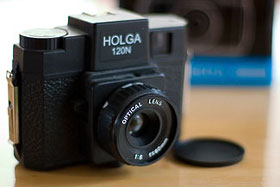

I don’t think I took more than 100 photos before I graduated high school.
I don’t think I took more than 100 photos before I graduated high school.
Scratch that, I probably didn’t take more than 25. You see, I didn’t really have a camera other than the occasional disposal that I bought for vacations. My parents had a decent camera, but they didn’t use it much and I just never felt like taking photos. I was busy with growing up—playing capture the flag and Nintendo.
While I have enjoyed painting and drawing for most of my life, after I started college I began to realize how I enjoyed creating things in general. I began to try new hobbies—like cooking—when I realized how important photography is to me. Being able to create something unique in the blink of an eye is such an incredible thing.
Hooked
After a lot of debate, I got my first camera. It was a DSLR—the lovely Canon EOS 10D—in January 2004. Like many others, I was hooked.
With digital, the possibilities seemed endless and the response was instant. After every frame, I could make snap decisions and recalibrations to get just the shot that I had in my mind. It was the perfect way to learn.
Embracing film
With my foundation in photography securely rooted on the digital end of the spectrum, I slowly began to feel a lot of repetition in the style of photos I was taking. It seemed that what I was producing looked a lot like the other digital stuff I was seeing other people produce. So, I kept digging through the Internet and books for other styles of photography and started to notice certain qualities of photos that appealed to me.
Photographs taken on toy cameras such as the Holga especially stood out to me because of the dark tones, selective focus, and especially the vignetting. So I bought a Holga and found myself head-first in 120 film.
The process of developing film felt good to me. Besides the excitement of finding out how my well-thought-out photos turned out, it allowed me to connect physically with my art in ways that are not possible with digital photography.
Unfortunately, developing film is time-consuming. And film and chemicals cost money. So, I try to find a balance that works for me. That balance happens to lie heavily on digital.
Other interests
Besides photography, I also enjoy painting, writing poetry, graphic design, web programming (like PHP and stuff), cooking, brewing beer, playing board games, trivia, going to museums, watching documentaries, British comedy, and listening to music.
Formal bio
Finally, if you are looking for a more formal bio because you are writing something about me or something (yeah, right), this pretty much sums it up.
Joe Lencioni is an artist, web developer, designer, and photographer with a talent for eliciting the best from his subjects. His work is often whimsical, thought-provoking, or downright unusual, but always thoroughly fantastic.
Lencioni lives in Saint Peter, Minnesota where he works as Associate Director of Software Engineering for Web Services at Gustavus Adolphus College. His photoblog, Shifting Pixel, features both digital and film, color and black and white photographs. His photos have appeared on CBS’s The Doctors, The Nature of Things with David Suzuki on CBC, Flak Photo, and in FILE Magazine.
Subscribe today, it is entirely free and does not take long.
Feeling stalkerish?
Here are some other places you can find me.